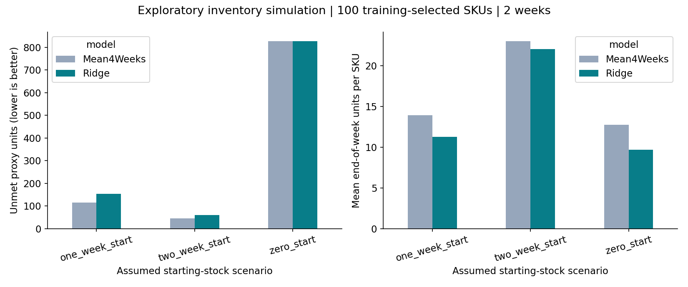

GROUP 05 · PROGRESS REVIEW 2 · RESEARCH PROTOTYPE
Stock replenishment decisions,
with evidence your group can explain.
Decide how many units to order at a weekly stock review. Historical usage estimates feed a transparent stock calculation. A controlled simulation compares two ways of estimating usage.
Historical demonstration, not live shop advice. Sales records are from 2022. Stock balances and delivery settings below are assumed. The source stock snapshot is undated and is not used as current stock. No Sri Lankan pilot or measured savings are claimed.
1. What did the stock simulation show?
100 SKUs selected using training-period volume only. Two held-out weeks starting 13 and 20 June 2022. Compare the validation-selected Ridge with a four-week average under the same weekly ordering rule.
- zero_start: Ridge unmet proxy = 827; four-week average = 827. Mean ending stock per SKU-week: 9.71 versus 12.79 units.
- one_week_start: Ridge unmet proxy = 153; four-week average = 116. Mean ending stock per SKU-week: 11.26 versus 13.96 units.
- two_week_start: Ridge unmet proxy = 60; four-week average = 45. Mean ending stock per SKU-week: 22.07 versus 23.02 units.
Read shortages and stock held together. Fewer ordered units alone does not prove a better policy. Orders still in transit at the end are reported, not discarded.

Download comparison CSV · Every stock movement · All assumptions · SKU selection
4. What this experiment cannot establish
- Historical shipped units are a demand proxy. Unrecorded lost demand is unknown.
- The same external historical series feeds both approaches even if the simulation runs out of stock. This is a controlled replay, not a complete closed-loop shop simulation.
- Only two evaluation weeks. Initial stock heavily affects outcomes; three scenarios are shown without choosing a winning setup.
- The inventory experiment was added after forecast scores were available. It is exploratory, not a fresh independent holdout.
- Week-end stock averages are not daily average stock. No cost, profitability, waste or sustainability benefits were measured.
- A local pilot needs dated stock balances, receipts, returns, supplier lead times and stockout records. New products and annual seasonality need more data.